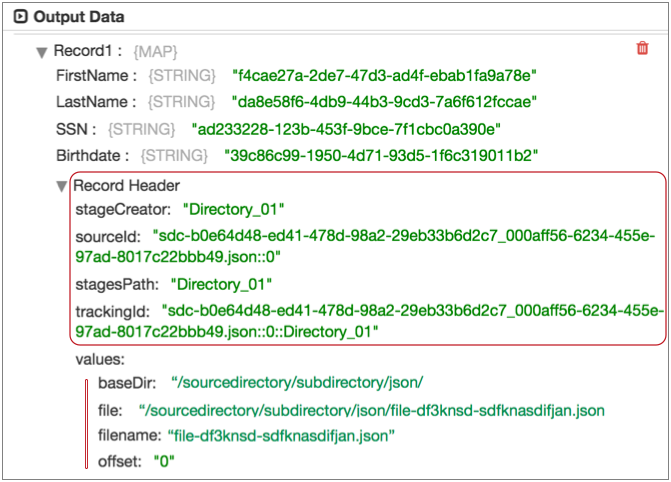

JavaScript Evaluator
The JavaScript Evaluator processes data based on JavaScript code. Use the JavaScript processor to use JavaScript code to perform custom processing.
- Initialization script - Optional initialization script that sets up resources or connections required by the processor. The initialization script is run once when the pipeline starts.
- Main processing script - Main script that processes data. The main script is run for each record or each batch of data, based on the configured processing mode.
- Destroy script - Optional destroy script that closes any resources or connections opened by the processor. The destroy script is run once when the pipeline stops.
When you use a JavaScript Evaluator in a pipeline, the Data Collector passes a batch of data to the processor and converts the data to a scripting-friendly data structure for processing.
The JavaScript Evaluator supports Java version 8u40 and later and ECMAScript version 5.1. The processor runs on the Nashorn JavaScript engine.
The JavaScript Evaluator provides extensive sample code that you can use to develop your script. You can also call external Java code from the script.
Processing Mode
You can choose the processing mode that the JavaScript Evaluator uses to process the main script. You can use the same script in each processing mode. However, you should include error handling in the main script before you run in batch mode.
The JavaScript Evaluator provides the following processing modes for the main script:
- Record by Record
- The processor calls the script for each record. The processor passes the record to the script as a map and processes each record individually.
- The script does not require error handling logic. Error records are passed to the processor for error handling. The processor handles error records based on the On Record Error property.
- Use this mode to avoid including error handling logic in the code. Since this mode calls the script for each record, pipeline performance will be negatively affected.
- Batch by Batch
- The processor calls the script for each batch. The processor passes the batch to the script as an array and processes the batch at one time.
- Include error handling logic in the script. Without error handling logic, a single error record sends the entire batch to the processor for error handling. The processor handles error records based on the On Record Error property.
- Use this mode to improve performance by processing a batch of data at a time.
JavaScript Scripting Objects
You can use different scripting objects in the JavaScript Evaluator, based on the type of script:
| Script Type | Valid Scripting Objects |
|---|---|
| Init | You can use the following scripting objects in the initialization
script:
|
| Main | You can use the following scripting objects in the main
script:
|
| Destroy | You can use the following scripting objects in the destroy
script:
|
The scripting objects work the same within each script type:
- records
- A collection of records to process. The records object includes different elements
based on the processing mode that you use:
- Record by Record - The records array includes one record element. A record includes a single value element. The value element contains the data for the record.
- Batch by Batch - The records array includes all records in the batch.
- Map and list record fields are mapped to JavaScript maps and arrays, respectively.
- state
- An object to store information between invocations of the init, main, and destroy scripts. A state is a map object that includes a collection of key/value pairs. You can use the state object to cache data such as lookups, counters, or a connection to an external system.
- The state object functions much like a member variable:
- The information is transient and is lost when the pipeline stops or restarts.
- The state object is available only for the instance of the processor stage it is defined in. If the pipeline executes in cluster mode, the state object is not shared across nodes.
- The same instance of the state object is available to all three scripts. For example, you might use the init script to open a connection to a database and then store a reference to that connection in the state object. In the main script, you can access the open connection using the state object. Then in the destroy script, you can close the connection using the state object.
-
Warning: The state object is best used for a fixed or static set of data. Adding to the cache on every record or batch can quickly consume the memory allocated to Data Collector and cause out of memory exceptions.
- log
- An object to write messages to the log. Includes four methods: info(), warn(), debug(), and trace().
- The signature of the four methods is as follows:
(message-template, arguments...)
The message template can have positional variables denoted by curly brackets: { }. The arguments are replaced in the message template curly brackets in positional manner, i.e., this is the first argument in the first { } occurrence, and so on. - output
- An object that writes the record to the output batch. Includes a write(Record) method.
- error
- An object that passes error records to the processor for error handling. Includes a write(Record, message) method.
- sdcFunctions
- An object that runs functions that evaluate or modify data. Includes the following methods:
-
- getFieldNull(Record, 'field path') - Method that checks if a field is assigned a constant such as NULL_INTEGER or NULL_STRING.
- createRecord(String, 'recordId') - Method that creates a new record with the specified fields and values. The recordId uniquely identifies the record. It should include enough information to track down the record source.
- createMap(boolean listMap) - Method that creates a map for use as a field in a record. Pass true to create a list-map field, or false to create a map field.
- createEvent(String type, int version) - Method that creates a new event record with the specified event type and version. Be sure to enable event generation in the stage before implementing event methods.
- toEvent(Record) - Method that sends an event record to the Event output stream. Be sure to enable event generation in the stage before implementing event methods.
Processing List-Map Data
In scripts that process list-map data, treat the data as maps.
List-Map is a Data Collector data type that allows you to use standard record functions to work with delimited data. When an origin reads delimited data, it generates List-Map fields by default.
The JavaScript Evaluator reads and passes list-map data. But to process data in a List-Map field, treat the field as a Map in the script.
Type Handling
Though JavaScript does not use type information when processing data, passing data to the rest of the pipeline requires data types. Note the following type information before you configure the remainder of the pipeline:
- Data type of null values
- The processor can associate null values with a data type. For example, if the JavaScript Evaluator assigns a null value to an Integer field, the field is returned to the pipeline as an integer with a null value.
- Use constants in the JavaScript code to create a new field of a specific data type with a
null value. For example, you can create a new String field with a null value by
assigning the type constant NULL_STRING to the field as
follows:
records[i].value.new_field = NULL_STRING
- Date fields
- Use the String data type to create a new field to store a date with a specific format. For
example, the following sample code creates a new String field that stores the current
date using the format
YYYY-MM-dd:
// Define a date object to record the current date var date = new Date() for(var i = 0; i < records.length; i++) { try { // Create a string field to store the current date with the specified format records[i].value.date = date.getFullYear()+ "-" + date.getMonth() + "-" + date.getDate() // Write record to the processor output output.write(records[i]); } catch (e) { // Send record to error error.write(records[i], e); } }
- Values retain their original type
- Values retain their original type regardless of whether the processor modifies the value.
Event Generation
You can use the JavaScript Evaluator to generate event records for an event stream. Enable event generation when you want the processor to generate an event record based on scripting logic.
As with any event record, you can pass events downstream to a destination for event storage or to any executor that can be configured to use the event. For more information about events and the event framework, see Dataflow Triggers Overview.
- On the General tab, select the Produce
Events property.
This enables the event output stream for use.
- In the script, include both of the following scripting objects:
- sdcFunctions.createEvent(String type, int version) - Creates an event
record with the specified event type and version number. You can create
a new event type or use an existing event type. Existing event types are
documented in other event-generating stages.
The event record contains no record fields. Generate record fields as needed.
- sdcFunctions.toEvent(Record) - Use to pass events to the event output stream.
- sdcFunctions.createEvent(String type, int version) - Creates an event
record with the specified event type and version number. You can create
a new event type or use an existing event type. Existing event types are
documented in other event-generating stages.
Working with Record Header Attributes
You can use the JavaScript Evaluator processor to read and update or create record header attributes.
Use a map when creating or updating a header attribute. If a header attribute exists, the processor updates the value, if it does not exist, the processor creates the attribute and sets it to the specified value.
All records include a set of read-only record header attributes that stages can update as they process the records. Error records also have their own set of read-only header attributes.
Some stages generate custom record header attributes that are meant to be used in particular ways. For example, the Oracle CDC Client origin specifies the operation type for a record in a record header attribute. And event-generating stages create a set of event header attributes for event records. For more information, see Record Header Attributes.
- record.<header name> - Use to return the value of a read-only header attribute.
- record.attributes - Use to return a map of custom record header attributes, or to create or update a specific record header attribute.
Viewing Record Header Attributes
You can use data preview to view the record header attributes associated with a record at any given point in the pipeline. To view record header attributes, enable the Show Record/Field Header data preview property.
For example, the following image shows a record generated by the Directory origin in data preview.

The "Record Header" list displays the set of read-only internal attributes in the record at this point of the pipeline. You can use the record.<header name> variable to return values for these attributes.
The header attributes under "values" are the attributes created by the Directory origin. You can use the record.attributes variable to return or modify these attributes. When you use the record.attributes variable to create a header attribute, it displays in this location during data preview.
Accessing Whole File Format Records
In a pipeline that processes the whole file data format, you can use a JavaScript Evaluator to read the whole file data.
The processor can access the fileref field in a whole file record by creating an input stream using the getInputStream() API. For example, you might use the processor to read the file data in the fileref field and then create new records with the data. The processor can access the fileref field, but cannot modify information in the field.
input_stream = record.value['fileRef'].getInputStream() input_stream.read()
input_stream.close()
Calling External Java Code
You can call external Java code from the JavaScript Evaluator. Simply install the external Java library to make it available to the JavaScript Evaluator. Then, call the external Java code from the script that you develop for the processor.
var <class name> = Java.type('<package>.<class name>');
var DigestSHA3 = Java.type('org.bouncycastle.jcajce.provider.digest.SHA3.DigestSHA3');
For more details, see the following StreamSets blog post: Calling External Java Code from Script Evaluators.
Configuring a JavaScript Evaluator
Configure a JavaScript Evaluator to use custom JavaScript in a pipeline.
-
In the Properties panel, on the General tab, configure the
following properties:
General Property Description Name Stage name. Description Optional description. Produce Events 
Generates event records when events occur. Use for event handling. 
Required Fields Fields that must include data for the record to be passed into the stage. Tip: You might include fields that the stage uses.Records that do not include all required fields are processed based on the error handling configured for the pipeline.
Preconditions Conditions that must evaluate to TRUE to allow a record to enter the stage for processing. Click Add to create additional preconditions. Records that do not meet all preconditions are processed based on the error handling configured for the stage.
On Record Error Error record handling for the stage: - Discard - Discards the record.
- Send to Error - Sends the record to the pipeline for error handling.
- Stop Pipeline - Stops the pipeline. Not valid for cluster pipelines.